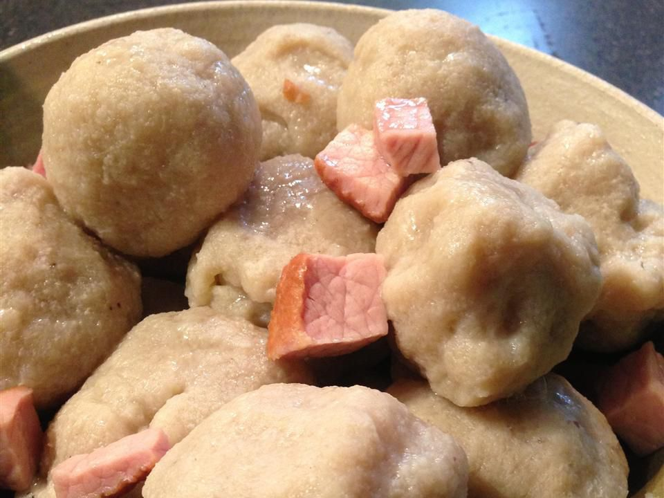

Potato Klubb

Description
This is a traditional Norwegian main dish. My grandmother always served it with fresh peas.
As good as the potato klubb are the first day, they're even better the second day sliced
and fried in butter until golden brown. We like to have them for breakfast with fried eggs.
Ingredients
- 2 cups all-purpose flour
- ½ teaspoon salt
- ¼ teaspoon baking powder
- ¼ teaspoon ground black pepper
- 4 cups potatoes, peeled and grated
- 2 tablespoons grated onion
- 8 ounces cooked ham, cut into 1 inch cubes
- 2 teaspoons salt
- 1 cup melted butter
Steps
- Mix the flour, 1/2 teaspoon salt, baking powder, and pepper together in a bowl.
Place the potatoes and onion in a large bowl, and stir in the flour mixture until
thoroughly blended. Use floured hands to knead the potato mixture in the bowl until it
takes on the quality of stiff bread dough. Add additional flour if the dough is too sticky.
- Pinch off a tennis ball-sized piece of dough and shape it around a cube of ham, completely
covering the ham, to form a ball. Repeat with remaining dough and ham cubes. Set aside any
extra ham.
- Fill a large pot with water, add 2 teaspoons salt and any extra ham, and bring to a boil
over medium-high heat. Carefully slide the balls into the boiling water, a few at a time.
Loosen any sticking to the bottom of the pot. Simmer for 45 minutes to 1 hour. Remove with
a slotted spoon, and drain on a plate. Serve hot with melted butter.